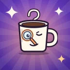
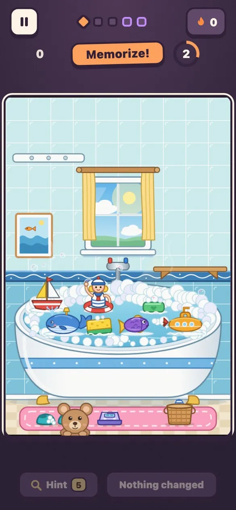
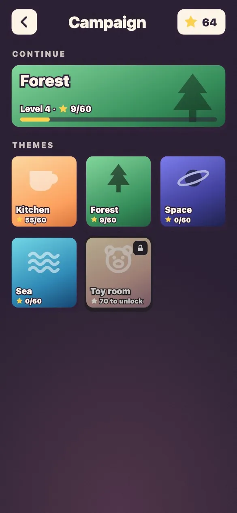
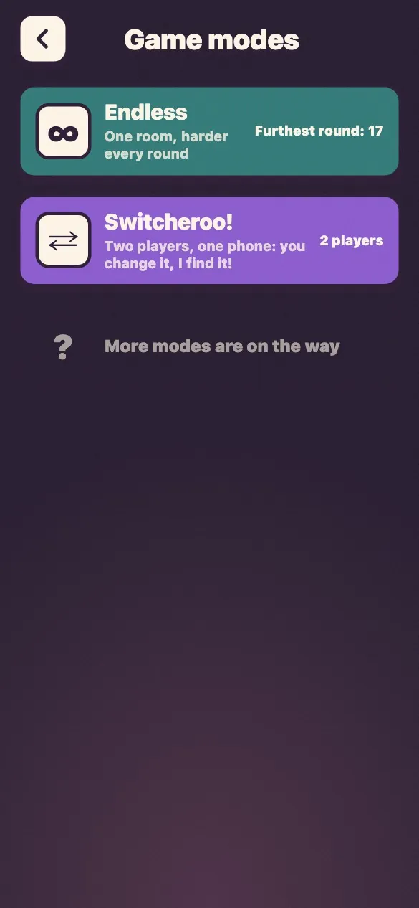

Study it. Blink. Spot what changed.
Whoa, What Changed? is a free single-player memory game for Android that works offline. A scene disappears for a moment and comes back with one small change. Can you find it?
- Works offline
- 5 unique themes
- Daily challenge
- Single player
- 8 languages


Play one room, right here
Study the kitchen, blink, and tap what changed. No sign-up and nothing to install. Liked it? The app has five unique themes, a daily challenge and a sticker book, and it works offline.
Download on Google Play →One round takes 10 to 20 seconds
Easy to learn in five seconds, and a gentle bit of brain training for any spare minute.
Memorize
A scene is shown for a few seconds. Take it all in.
Blink
It disappears for a moment and comes back with one change.
Spot it
Tap what is different. Careful: sometimes nothing changed, and in boss rounds there are two changes.
A level is five rounds. Three right clears it, and a perfect score earns three stars.
Seven tricks to spot it faster
Stuck on a level? A few small habits make a big difference.
Scan in a fixed order
Left to right, top to bottom. Every time.
Think in clusters
Stove area, table, shelf. Not twenty single things.
Check the corners
Small changes love to hide at the edges.
Count, colour, gap
One more, one less, a new colour, a hole where something was.
Trust your gut
If a spot feels off, check it first.
Look twice
Sometimes nothing changed. Boss rounds have two changes.
Short and often
A few fresh rounds beat one tired marathon. The daily challenge is made for it.
See it in action





Five unique themes, each a little harder
Every theme has its own look and its own things to spot, and every level is a place of its own.
- Kitchen
- Living room
- Bedroom
- School
- Garden
Start in a kitchen with a marble island, sit down in grandma's living room full of lace, peek into a gamer's bedroom, grab lunch in the school canteen, then step out into the garden.
Plenty to come back to
Modes, goals and little rewards, so there is always one more round.
Daily Challenge
One hard puzzle a day, the same for everyone. Share your result and compare notes.
Sticker book
Earn a sticker for every scene and catch the little creature that peeks in.
Endless
A little harder every round, with three lives. How far can you get?
Sprint
Three quick rounds against the clock. Every wrong tap adds 3 seconds.
Switcheroo
Two players, one phone: you change one thing, your friend finds it.
Hardcore & challenge levels
For when three stars are not enough.
Streaks & daily goals
Play the daily on consecutive days for rewards, hints and streak freezes. Finish three small goals a day for a free hint.
Calm music
A generative tune for every place, with separate switches for music and sound.
Easy on the eyes and clock
A “More time” mode and colour help, so everyone can play.
Eight languages
English, Nederlands, Deutsch, Español, Français, Português, Italiano and Bahasa Indonesia.
A small workout for attention and memory
To spot the change you have to look carefully, hold the scene in your head for a moment and compare it with what comes back. That is the whole game, and it is the same kind of looking and remembering we use every day.
Whoa, What Changed? is made to be fun, not to treat or train anything. It is a calm, short way to take a break and pay attention to something small.
Made for a spare minute
- People aged 13 and over who like puzzles, observation and memory games.
- Short breaks: on the bus or train, in a waiting room, or before bed.
- Offline play, so a flight or bad signal is no problem.
- Two people on one phone, with Switcheroo: you change one thing, your friend finds it.
- Daily players who like a streak and the same puzzle as everyone else.
Questions and answers
What is Whoa, What Changed?
A memory game for Android made by devbydima. A scene is shown for a few seconds, disappears for a moment and comes back with one small change. You tap what is different.
Does it work offline?
Yes. Whoa, What Changed? works offline, so you can play without an internet connection.
Is Whoa, What Changed? free?
Yes. It is free to play and needs no account. Ads are kept to a minimum, and one optional purchase removes the full-screen ads.
Which themes are there?
Five unique themes: Kitchen, Living room, Bedroom, School and Garden. Each one is a little harder than the last.
Can two people play together?
Yes. Switcheroo is a two-player mode on one phone: one player changes one thing and the other finds it.
Is there a daily challenge?
Yes. One hard puzzle a day, the same for everyone. Playing on consecutive days builds a streak that earns rewards, hints and streak freezes.
What is Sprint mode?
A short run of three rounds against the clock. Every wrong tap adds 3 seconds to your time, so look first and tap once.
What if nothing changed?
That can happen. Sometimes nothing changed, and in boss rounds there are two changes, so check carefully before you tap.
Which languages does it support?
English, Nederlands, Deutsch, Español, Français, Português, Italiano and Bahasa Indonesia.
How do I find the right app on Google Play?
Search for “Whoa, What Changed? by devbydima” or open the Google Play link on this page. The package name is devbydima.whatchanged.
What age is it for?
Whoa, What Changed? is intended for people aged 13 and over.
Where is my progress stored?
On your own phone. There are no accounts. See the privacy policy for what Google and RevenueCat handle for ads, usage statistics and purchases.
Free, and fair about ads
Free to play, no account needed.
- Ads are kept to a minimum, with no spam. Some videos in the game earn you a hint or a second chance.
- Now and then a short ad between levels, never during a round.
- No banners. One optional purchase removes the full-screen ads.
- Your progress stays on your phone. We only see anonymous usage statistics, and where the law asks for it, only after you agree. Read the privacy policy.